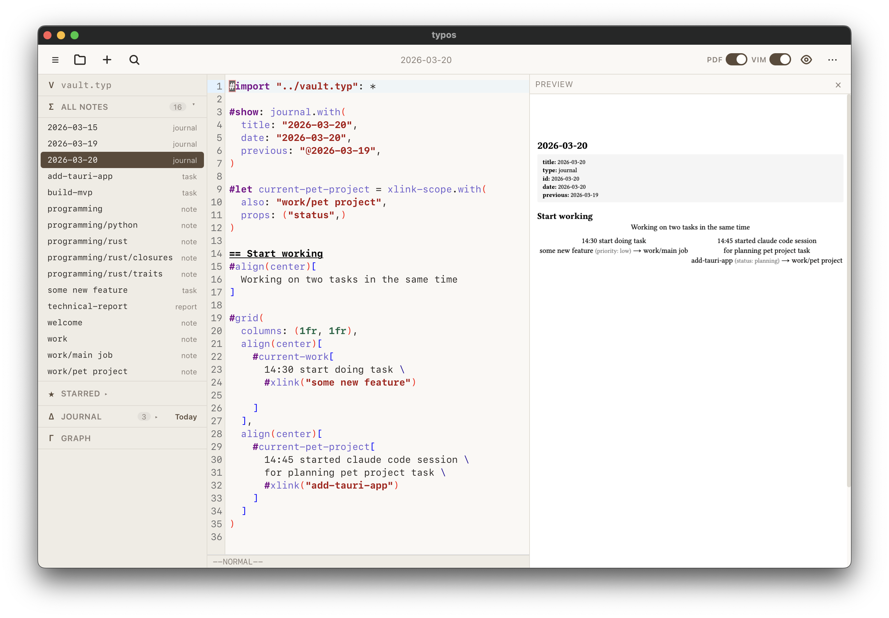

A note-taking system you program, not configure.
Experience the precision of classical typesetting fused with the performance of modern engineering. Built on Typst and Rust for the digital scholar.

Program your knowledge system.
Stop fighting with rigid folders. Define your own types and custom fields in vault.typ. Your hierarchy adapts to your research, not the other way around.
"task",
fields: (tags: (), priority: "")
)
The precision of typesetting.
Experience mathematical rigor with the performance of Rust and Tauri. Monospace is a first-class citizen, ensuring your code, data, and citations are rendered with academic honesty.
Source and preview side-by-side.
No hidden layers. What you write is what exists. The side-by-side preview ensures your final publication-ready document is exactly what you intended. Precision by design.
Technical Architecture
notes-app
Tauri-powered desktop shell using Svelte and CodeMirror 6 for a lightweight, extensible editor.
notes-core
Blazing-fast Rust library handling AST parsing, content indexing, and graph relationships.
notes-cli
Direct terminal interface for pipeline integration and headless vault management.
notes-framework
Dedicated Typst package providing the styling and formatting rules for your notes.
Start your next manuscript.
Typos is free, open-source, and local-first. Your knowledge belongs to you, always.